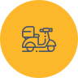

Scooter sharing made simple
Scoot takes the hassle out of urban mobility. Our bikes are placed in convenient locations in each of our cities. Use our app to locate the nearest bike, unlock it with a tap, and you’re away!


-

Locate with app
Use the app to find the nearest scooter to you. We are continuously placing scooters in the areas with most demand, so one should never be too far away.
-

Pick your scooter
We show the most important info for the scooters closest to you. So you know how much charge they have left and can see roughly how much it will cost.
-

Enjoy the ride
Scan the QR code and the bike will unlock. Retract the cable lock, put on a helmet, and you’re off! Always lock bikes away from walkways and accessibility ramps.
-
Easy to use riding telemetry
The Scoot app is available with riding telemetry. This means it can show you your average speed, how long you've been using the scooter, your traveling distance, and many more things all in an easy to use app.

-
Coming to a city near you
Scoot is available in 4 major cities so far. We’re expanding rapidly, so be sure to let us know if you want to see us in your hometown. We’re aiming to let our scooters loose on 23 cities over the coming year.


-
Easy to use riding telemetry
The Scoot app is available with riding telemetry. This means it can show you your average speed, how long you've been using the scooter, your traveling distance, and many more things all in an easy to use app.